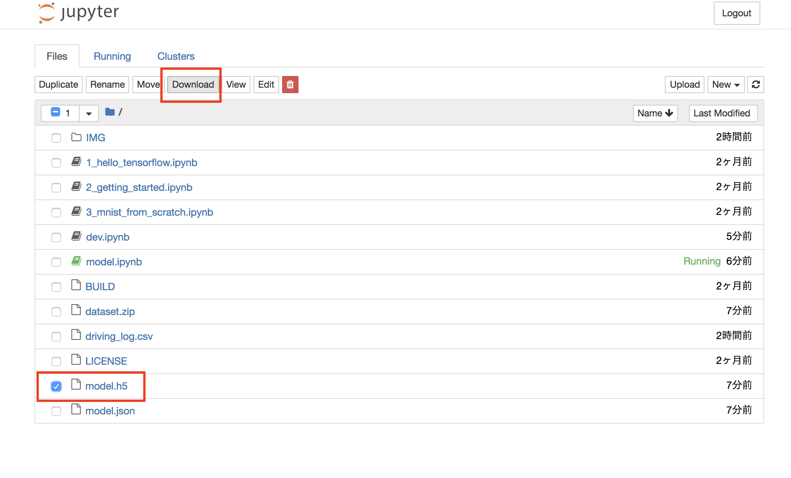
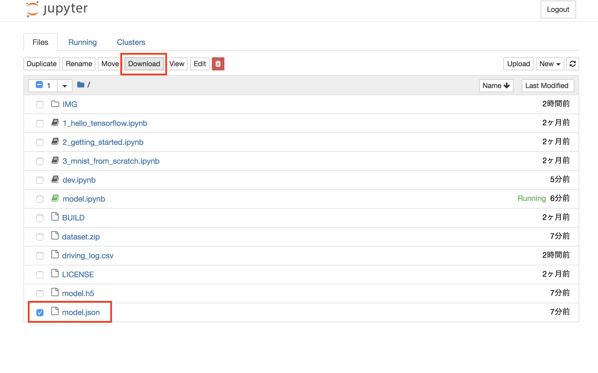
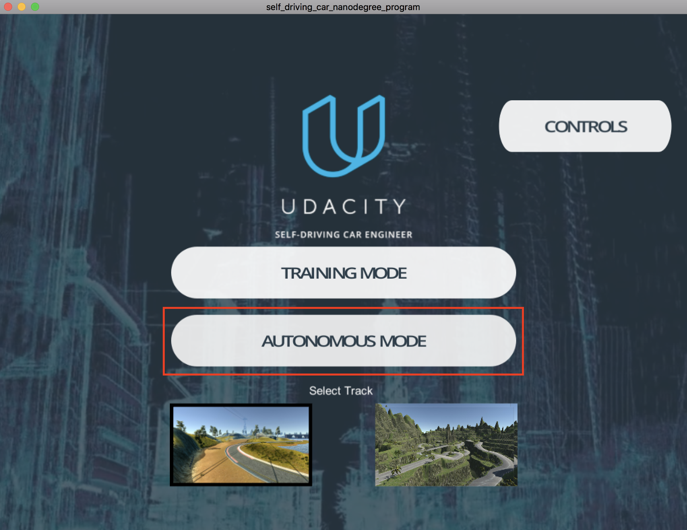

End2end run
Local環境の構築(MAC)
1 2 3 4 5 6 | pip install opencv-python pip install socketio pip install Image pip install keras pip install Flask pip install tensorflow |
学習済みModelのDownload


実行ソース
https://github.com/ymshao/End-to-End-Learning-for-Self-Driving-Cars/blob/master/drive.py
より
drive.py
1 2 3 4 5 6 7 8 9 10 11 12 13 14 15 16 17 18 19 20 21 22 23 24 25 26 27 28 29 30 31 32 33 34 35 36 37 38 39 40 41 42 43 44 45 46 47 48 49 50 51 52 53 54 55 56 57 58 59 60 61 62 63 64 65 66 67 68 69 70 71 72 73 74 75 76 77 78 79 80 81 82 83 84 85 86 87 88 89 90 91 92 93 94 95 96 97 98 99 100 101 102 103 104 105 106 107 | import argparse import base64 import json import cv2 import numpy as np import socketio import eventlet import eventlet.wsgi import time from PIL import Image from PIL import ImageOps from flask import Flask, render_template from io import BytesIO from keras.models import model_from_json from keras.preprocessing.image import ImageDataGenerator, array_to_img, img_to_array # Fix error with Keras and TensorFlow import tensorflow as tf tf.python.control_flow_ops = tf sio = socketio.Server() app = Flask(__name__) model = None prev_image_array = None @sio.on('telemetry') def telemetry(sid, data): # The current steering angle of the car steering_angle = data["steering_angle"] # The current throttle of the car throttle = data["throttle"] # The current speed of the car speed = data["speed"] # The current image from the center camera of the car imgString = data["image"] image = Image.open(BytesIO(base64.b64decode(imgString))) image_array = np.asarray(image) transformed_image_array = image_array[None, :, :, :] #resize the image transformed_image_array = ( cv2.resize((cv2.cvtColor(transformed_image_array[0], cv2.COLOR_RGB2HSV))[:,:,1],(32,16))).reshape(1,16,32,1) # This model currently assumes that the features of the model are just the images. Feel free to change this. steering_angle = float(model.predict(transformed_image_array, batch_size=1)) # The driving model currently just outputs a constant throttle. Feel free to edit this. throttle = 0.2 #adaptive speed ''' if (float(speed) < 10): throttle = 0.4 else: # When speed is below 20 then increase throttle by speed_factor if ((float(speed)) < 25): speed_factor = 1.35 else: speed_factor = 1.0 if (abs(steering_angle) < 0.1): throttle = 0.3 * speed_factor elif (abs(steering_angle) < 0.5): throttle = 0.2 * speed_factor else: throttle = 0.15 * speed_factor ''' print('Steering angle =', '%5.2f'%(float(steering_angle)), 'Throttle =', '%.2f'%(float(throttle)), 'Speed =', '%.2f'%(float(speed))) send_control(steering_angle, throttle) @sio.on('connect') def connect(sid, environ): print("connect ", sid) send_control(0, 0) def send_control(steering_angle, throttle): sio.emit("steer", data={ 'steering_angle': steering_angle.__str__(), 'throttle': throttle.__str__() }, skip_sid=True) if __name__ == '__main__': parser = argparse.ArgumentParser(description='Remote Driving') parser.add_argument('model', type=str, help='Path to model definition json. Model weights should be on the same path.') args = parser.parse_args() with open(args.model, 'r') as jfile: # NOTE: if you saved the file by calling json.dump(model.to_json(), ...) # then you will have to call: # # model = model_from_json(json.loads(jfile.read()))\ # # instead. model = model_from_json(jfile.read()) model.compile("adam", "mse") weights_file = args.model.replace('json', 'h5') model.load_weights(weights_file) # wrap Flask application with engineio's middleware app = socketio.Middleware(sio, app) # deploy as an eventlet WSGI server eventlet.wsgi.server(eventlet.listen(('', 4567)), app) |
エミュレーターの起動

学習済みモデルの実行
python drive.py model.json